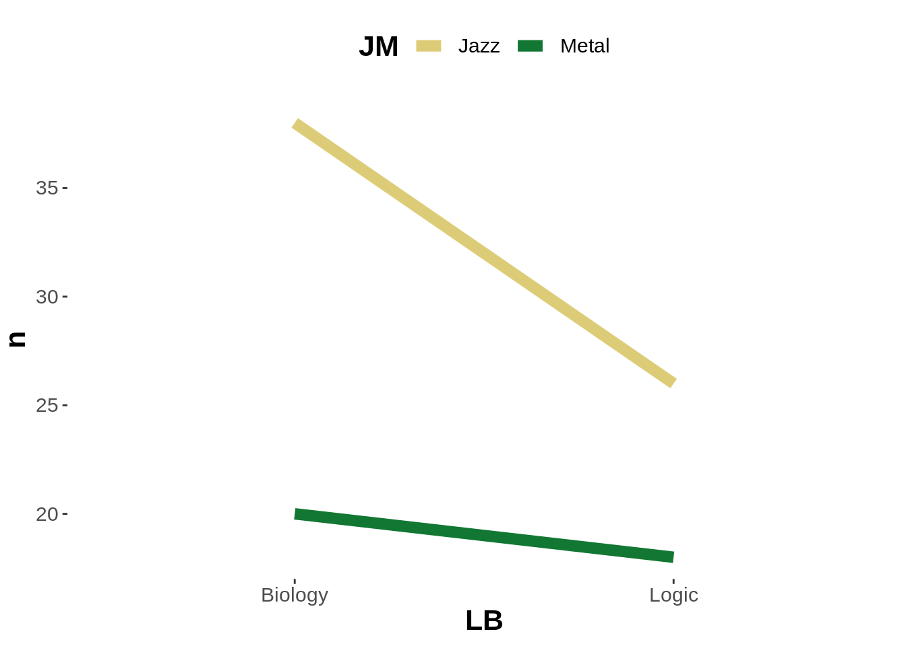
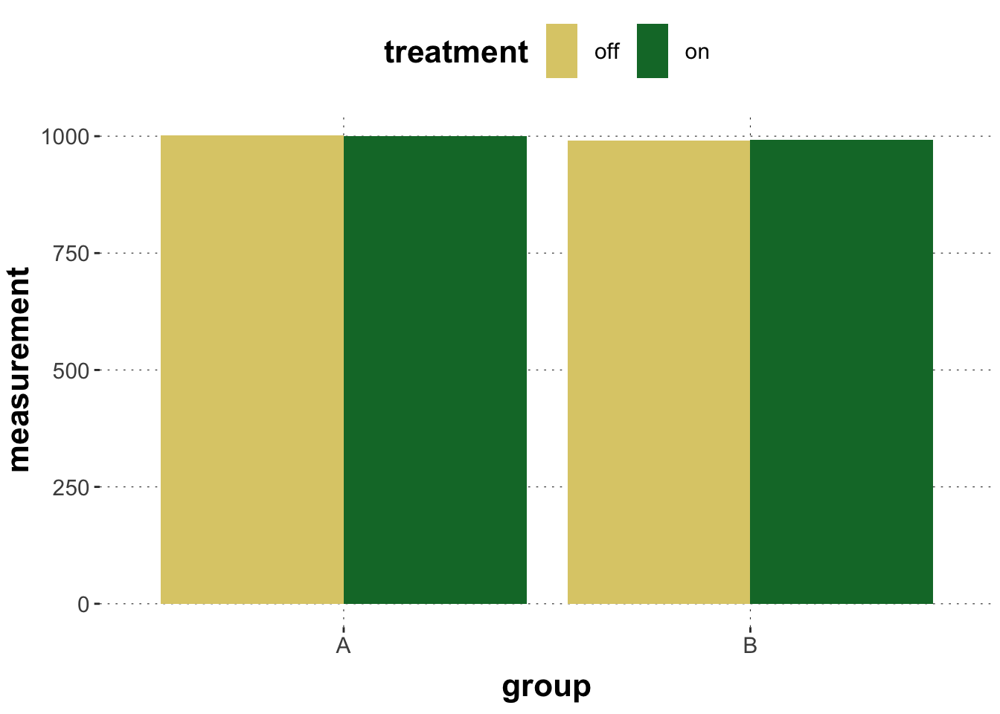
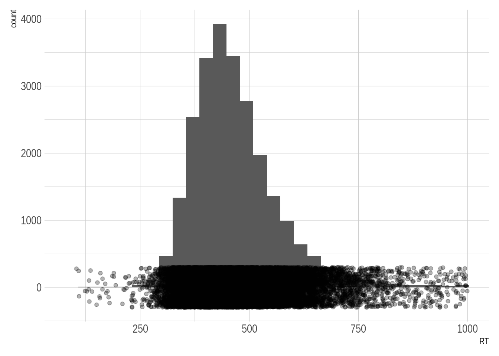
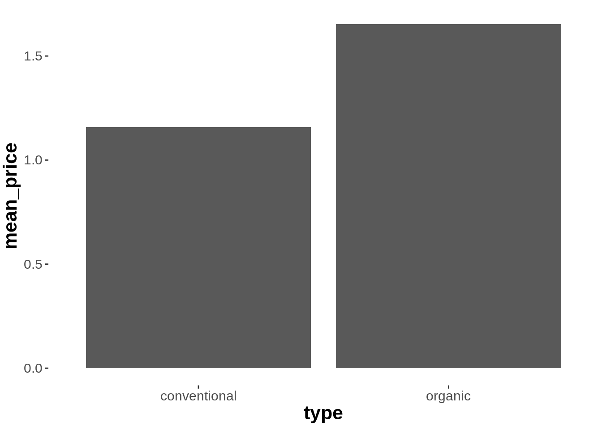
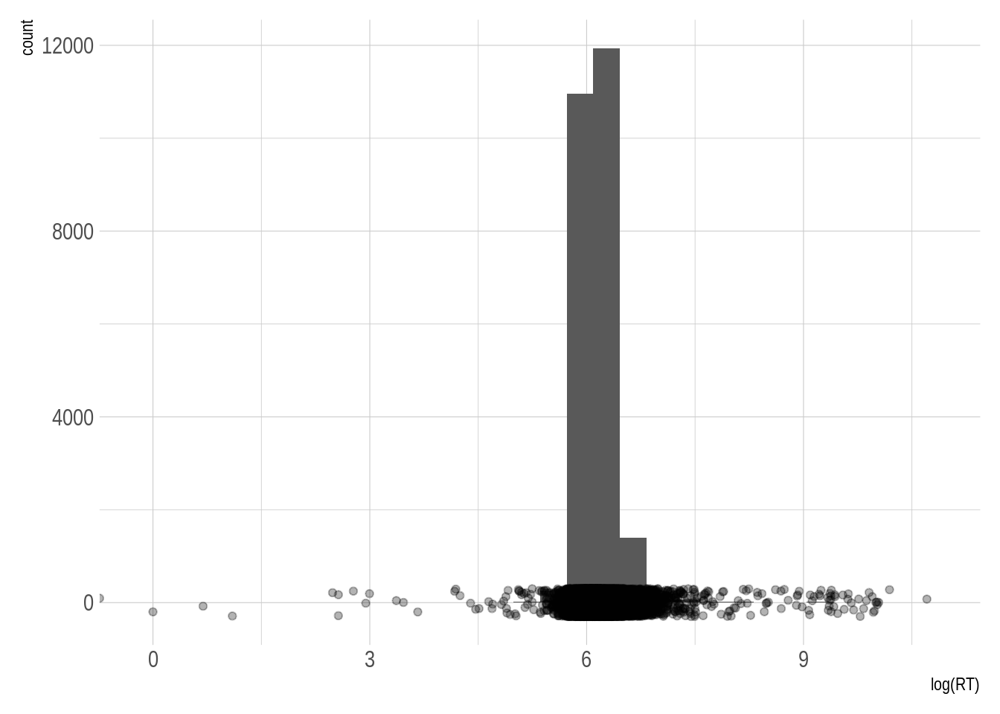

D.2 Simon Task
CAVEAT: THIS CHAPTER IS A DRAFT; DEFER READING UNTIL LATER
The Simon task is pretty cool. The task is designed to see if responses are faster and/or more accurate when the stimulus to respond to occurs in the same relative location as the response, even if the stimulus location is irrelevant to the task. For example, it is faster to respond to a stimulus presented on the left of the screen with a key that is on the left of the keyboard (e.g. q), than with a key that is on the right of the keyboard (e.g. p).
D.2.1 Experiment
D.2.1.1 Participants
A total of 213 participants took part in an online version of a Simon task. Participants were students enrolled in either “Introduction to Cognitive (Neuro-)Psychology” (N = 166), or “Experimental Psychology Lab Practice” (N = 39) or both (N = 4).
D.2.1.2 Materials & Design
Each trial started by showing a fixation cross for 200 ms in the center of the screen. Then, one of two geometrical shapes was shown for 500 ms. The target shape was either a blue square or a blue circle. The target shape appeared either on the left or right of the screen. Each trial determined uniformly at random which shape (square or circle) to show as target and where on the screen to display it (left or right). Participants where instructed to press keys q (left of keyboard) or p (right of keyboard) to identify the kind of shape on the screen. The shape-key allocation happened experiment initially, uniformly at random once for each participant and remained constant throughout the experiment. For example, a participant may have been asked to press q for square and p for circle.
Trials were categorized as either ‘congruent’ or ‘incongruent’. They were congruent if the location of the stimulus was the same relative location as the response key (e.g. square on the right of the screen, and p key to be pressed for square) and incongruent if the stimulus was not in the same relative location as the response key (e.g. square on the right and q key to be pressed for square).
In each trial, if no key was pressed within 3 seconds after the appearance of the target shape, a message to please respond faster was displayed on screen.
D.2.1.3 Procedure
Participants were first welcomed and made familiar with the experiment. They were told to optimize both speed and accuracy. They then practiced the task for 20 trials before starting the main task, which consisted of 100 trials. Finally, the experiment ended with a post-test survey in which participants were asked for their student IDs and the class they were enrolled in. They were also able to leave any optional comments.
D.2.2 Results
D.2.2.1 Loading and inspecting the data
We load the data into R and show a summary of the variables stored in the tibble:
## Observations: 25,560
## Variables: 15
## $ submission_id <dbl> 7432, 7432, 7432, 7432, 7432, 7432, 7432, 7432, 7432,…
## $ RT <dbl> 1239, 938, 744, 528, 706, 547, 591, 652, 627, 485, 51…
## $ condition <chr> "incongruent", "incongruent", "incongruent", "incongr…
## $ correctness <chr> "correct", "correct", "correct", "correct", "correct"…
## $ class <chr> "Intro Cogn. Neuro-Psychology", "Intro Cogn. Neuro-Ps…
## $ experiment_id <dbl> 52, 52, 52, 52, 52, 52, 52, 52, 52, 52, 52, 52, 52, 5…
## $ key_pressed <chr> "q", "q", "q", "q", "p", "p", "q", "p", "q", "q", "q"…
## $ p <chr> "circle", "circle", "circle", "circle", "circle", "ci…
## $ pause <dbl> 1896, 1289, 1705, 2115, 2446, 2289, 2057, 2513, 1865,…
## $ q <chr> "square", "square", "square", "square", "square", "sq…
## $ target_object <chr> "square", "square", "square", "square", "circle", "ci…
## $ target_position <chr> "right", "right", "right", "right", "left", "right", …
## $ timeSpent <dbl> 7.565417, 7.565417, 7.565417, 7.565417, 7.565417, 7.5…
## $ trial_number <dbl> 1, 2, 3, 4, 5, 6, 7, 8, 9, 10, 11, 12, 13, 14, 15, 16…
## $ trial_type <chr> "practice", "practice", "practice", "practice", "prac…It is often useful to check general properties, such as the mean time participants spent on the experiment:
## [1] 21.61656About 21.62 minutes is quite long, but we know that the mean is very susceptible to outliers, so we may want to look at a more informative set of summary statistics:
## Min. 1st Qu. Median Mean 3rd Qu. Max.
## 5.648 6.905 7.692 21.617 9.113 1158.110D.2.2.2 Summarizing & cleaning the data
We look at outlier-y behavior at the level of individual participants first, then at the level of individual trials.
D.2.2.2.1 Individual-level error rates & reaction times
It is conceivable that some participants did not take the task seriously. They may have just fooled around. We will therefore inspect each individual’s response patterns and reaction times. If participants appear to have “misbehaved” we discard all of their data. (CAVEAT: Notice the researcher degrees of freedom in the decision of what counts as “misbehavior”! It is therefore that choices like these are best committed to in advance, e.g. via pre-registration!)
We can calculate the mean reaction times and the error rates for each participant.
d_individual_summary <- d %>%
filter(trial_type == "main") %>% # look at only data from main trials
group_by(submission_id) %>% # calculate the following for each individual
summarize(mean_RT = mean(RT),
error_rate = 1 - mean(ifelse(correctness == "correct", 1, 0)))
head(d_individual_summary)## # A tibble: 6 x 3
## submission_id mean_RT error_rate
## <dbl> <dbl> <dbl>
## 1 7432 595. 0.05
## 2 7433 458. 0.04
## 3 7434 531. 0.04
## 4 7435 433. 0.12
## 5 7436 748. 0.06
## 6 7437 522. 0.12Let’s plot this summary information:

Here’s a crude way of branding outlier-participants:
d_individual_summary <- d_individual_summary %>%
mutate(outlier = case_when(mean_RT < 350 ~ TRUE,
mean_RT > 750 ~ TRUE,
error_rate > 0.5 ~ TRUE,
TRUE ~ FALSE))
d_individual_summary %>%
ggplot(aes(x = mean_RT, y = error_rate)) +
geom_point() +
geom_point(data = filter(d_individual_summary, outlier == TRUE),
color = "firebrick", shape = "square", size = 5)
We then clean the data set in a first step by removing all participants identified as outlier-y:
d <- full_join(d, d_individual_summary, by = "submission_id") # merge the tibbles
d <- filter(d, outlier == FALSE)
message("We excluded ", sum(d_individual_summary$outlier) , " participants for suspicious mean RTs and higher error rates.")## We excluded 5 participants for suspicious mean RTs and higher error rates.D.2.2.2.2 Trial-level reaction times
It is also conceivable that inidividual trials resulted in early accidental key presses or were interrupted in some way or another. We therefore look at the overall distribution of RTs and determine (similarly arbitrarily, but once again this should be planned in advance) what to exclude.
d %>% ggplot(aes(x = log(RT))) +
geom_histogram() +
geom_jitter(aes(x = log(RT), y = 1), alpha = 0.3, height = 300)
Let’s decide to exclude all trials that lasted longer than 1 second and also all trials with reaction times under 100 ms.
d <- filter(d, RT > 100 & RT < 1000)
d %>% ggplot(aes(x = RT)) +
geom_histogram() +
geom_jitter(aes(x = RT, y = 1), alpha = 0.3, height = 300)
D.2.2.3 Exploring the (main) data
We are mostly interested in the influence of congruency on the reactions times in the trials where participants gave a correct answer. But here we also look at, for comparison, the reaction times for the incongruent trials.
Here is a summary of the means and standard deviations for each condition:
d_sum <- d %>%
group_by(correctness, condition) %>%
summarize(mean_RT = mean(RT),
sd_RT = sd(RT))
d_sum## # A tibble: 4 x 4
## # Groups: correctness [2]
## correctness condition mean_RT sd_RT
## <chr> <chr> <dbl> <dbl>
## 1 correct congruent 459. 105.
## 2 correct incongruent 484. 91.9
## 3 incorrect congruent 460. 111.
## 4 incorrect incongruent 404. 95.4Here’s a plot of the reaction times split up by whether the answer was correct and whether the trial was congruent or incongruent.
d %>% ggplot(aes(x = RT)) +
geom_jitter(aes(y = 0.0005), alpha = 0.1, height = 0.0005) +
geom_density(fill = "gray", alpha = 0.5) +
geom_vline(data = d_sum,
mapping = aes(xintercept = mean_RT),
color = "firebrick") +
facet_grid(condition ~ correctness)
D.2.3 Analysis
We are interested in comparing the RTs of correct answers in the congruent and incongruent conditions. We saw a difference in mean reaction times, but we’d like to know if this difference is meaningful. One way of testing this is by running a regression model, which tries to predict RTs as a function of conguency. In the simplest case we would therefore do this:
According to this analysis, there is reason to believe in a difference in RTs between congruent and incongruent groups. The coefficient estimated for the incongruent group is on average ca. 25 ms higher than that of the congruent group.
However, we can also look at the interaction between correctness and condition. As shown in the above graph, there are four different cells in a 2x2 grid.
In the below model, this is coded with ‘dummy coding’ such that the top-left cell (congruent-correct) is the intercept, and each other cell is calculated by the addition of offsets.
We may want to ask the question: are reaction times to correct-congruent responses shorter than reaction times to incorrect-incongruent responses?
To do this, we first need to extract the posterior samples from our model.
Then we need to determine the correct offsets to match the correct-congruent and incorrect-incongruent cells in the design matrix.
# correct-congruent is the reference cell
correct_congruent <- post_samples$b_Intercept
# incorrect_incongruent is the bottom-right cell
incorrect_incongruent <- post_samples$b_Intercept +
post_samples$b_conditionincongruent +
post_samples$b_correctnessincorrect +
post_samples$`b_conditionincongruent:correctnessincorrect`Once we know these, we can calculate the probability that the comparison is in the correct direction.